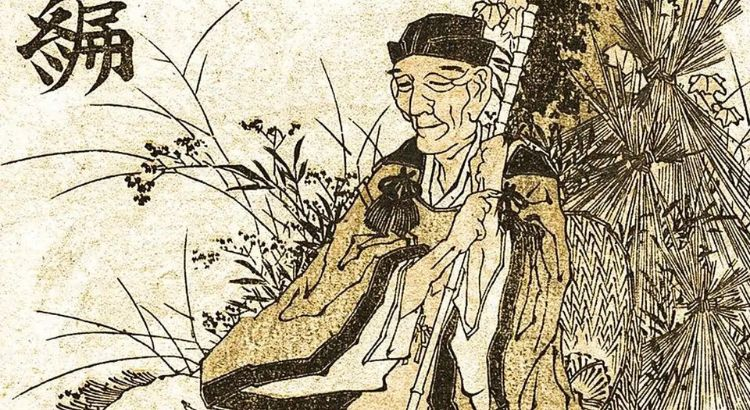
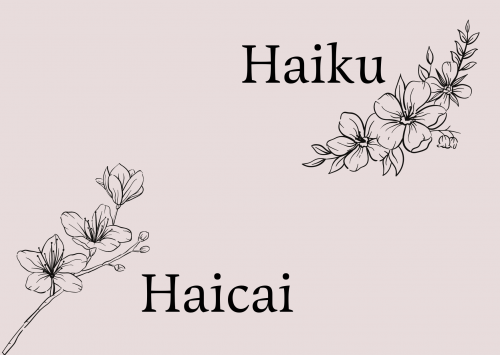

Nesta matéria do meu blog você verá como, onde e quando começou Haiku, ou em português, haicai. Passaremos por seus criadores até chegarmos nos autores mais importantes.

Nesta matéria do meu blog você verá como e quando começou o haicai no Brasil. Passaremos pelos pioneiros do Haicai brasileiro até chegarmos nos autores mais importantes e influentes do gênero nas terras tupiniquins.
